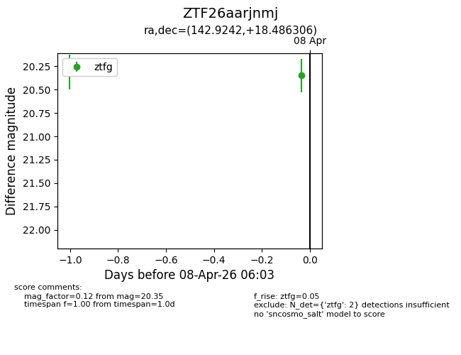
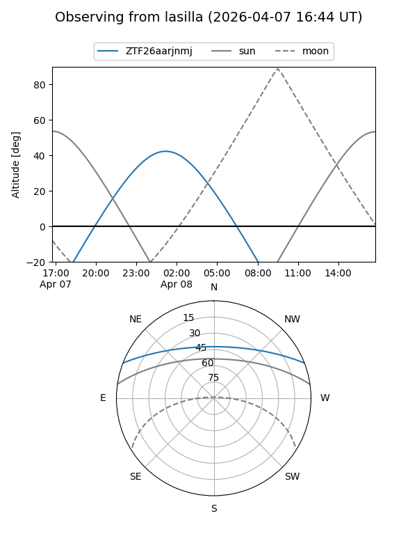
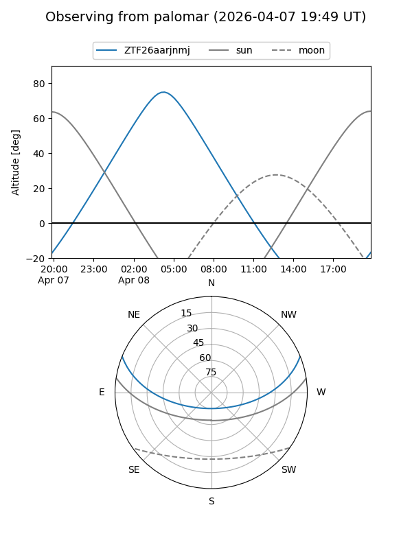
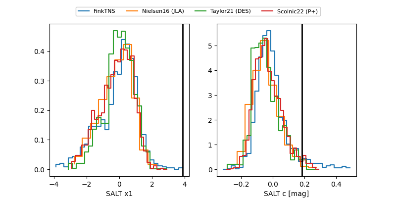

ZTF26aarjnmj
Target ZTF26aarjnmj at 2026-04-08 06:08
Aliases and brokers:
FINK: link
Lasair: link
ALeRCE: link
alt names
ZTF26aarjnmj (ztf,fink_ztf)
Coordinates:
equatorial (ra, dec) = 142.9242,+18.48631
equatorial (HMS+DMS) = 09:31:41.81,+18:29:10.70
galactic (l, b) = (212.6284,+43.46145)
Flags:
Photometry:
last ztfg=20.35
2 ztfg detections
Lightcurve

Visibility


Additional plots
